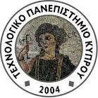

Άνοιξη 2012
Βασικός στόχος του μαθήματος είναι να διδάξει βασικές έννοιες συνταύτισης, παραλληλισμού και κατανομής σε μεσαίας και μεγάλης κλίμακας κατανεμημένα συστήματα. Θέματα ταυτοχρονισμού περιλαμβάνουν διαδικαστικά προγράμματα συνεργασίας, μοντέλα ταυτόχρονου προγραμματισμού, κατανομή δεδομένων και ελέγχου, έλεγχο ταυτοχρονισμού και ανάκαμψη σε συστήματα συναλλαγών. Η παράλληλη επεξεργασία εστιάζεται σε νέες αρχιτεκτονικές πολλαπλών πυρήνων, κατάλληλων συστημάτων και αλγορίθμων που εκμεταλλεύονται τον υποκείμενο παραλληλισμό. Η κατανομή καλύπτει επιλεγμένα θέματα όπως προβλήματα διανομής δεδομένων και έλεγχου, καθώς και συστήματα υποστήριξης κατανεμημένων συναλλαγών.
Πέραν των θεωρητικών όρων που θα καλύψουν οι διαλέξεις, οι διδασκόμενοι αναμένεται επίσης να αποκτήσουν πρακτική εξάσκηση μέσω των εργαστηρίων.
Για περισσότερες πληροφορίες ανατρέξτε στο συμβόλαιο του μαθήματος.
To: nearchos at acm dot org Subject: [EEIT327] ...